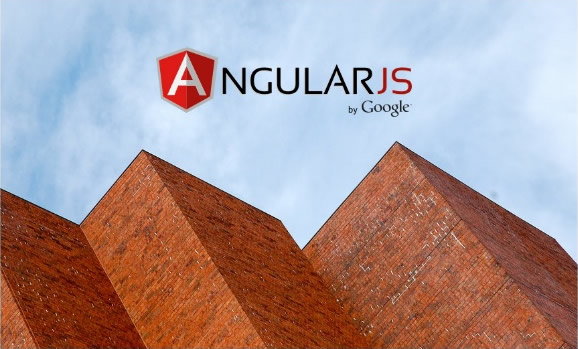

Интенсив-тьюториал по созданию сайта на основе AngularJS.
Только для супергероев!
Или тех, кто хотя бы хочет им стать.

Данный тьюториал задуман как сугубо практическое пособие. В отличие от большинства других, он посвящён не какому-либо одному аспекту разработки приложения. Его цель — прежде всего — дать вам видение процесса в целом и познакомить с его основными аспектами и основными используемыми методами.
При этом некоторые важные моменты, без которых создание современного приложения невозможно, будут рассмотрены настолько подробно, насколько это необходимо.
Иначе говоря, здесь применён подход «от общего к частному».

Самым общим в данном случае является создание сайта как такового, в простейшем варианте — его каркаса, структуры.
Далее будет рассмотрен второй важнейший вопрос — оперирование динамическими данными. Здесь в общих чертах будут исследованы основные концепции Angular — scope (области видимости), модули, контроллеры, директивы, сервисы и т.п., а также базисный архитектурный паттерн MVC.
Более подробно об этом можно узнать в секции Архитектура. В разделе Ресурсы приведены ссылки на другие полезные материалы, которые помогут вам углубиться в предмет.